Цель работы
освоить практические приемы создания отчета на платформе «1С:Предприятие», научиться использовать систему компоновки данных, выбирать источник данных, настраивать поля, группировки и отборы, а также формировать отчет об остатках товаров на складах.
После выполнения лабораторной работы студент должен уметь:
- создавать объект конфигурации вида «Отчет»;
- создавать схему компоновки данных;
- выбирать регистр накопления в качестве источника данных;
- использовать виртуальную таблицу остатков;
- настраивать выбранные поля отчета;
- создавать группировки по товарам и складам;
- добавлять отборы;
- включать отчет в подсистему;
- обновлять конфигурацию базы данных;
- формировать и анализировать отчет в режиме «Предприятие»;
- сравнивать данные отчета с предполагаемыми остатками.
Краткие теоретические сведения
Отчет представляет собой объект конфигурации, предназначенный для получения, обработки и представления данных информационной базы в удобной для пользователя форме.
Для создания отчетов в системе «1С:Предприятие» широко применяется система компоновки данных, сокращенно СКД. Она позволяет настроить источник данных, поля, группировки, отборы, сортировку и итоговые показатели без написания значительного объема программного кода.
Для получения актуальных остатков товаров используется виртуальная таблица регистра накопления «РегистрНакопления.ОстаткиТоваров.Остатки».
Она позволяет получить значения ресурсов регистра на определенный момент времени.
Для отчета «Остатки товаров» необходимы следующие данные:
| Поле отчета | Назначение |
|---|---|
| Товар | Определяет товар |
| Склад | Определяет место хранения |
| КоличествоОстаток | Показывает фактический остаток товара |
Профессиональная ситуация
В конфигурации «ТорговаяКомпания» настроено проведение документов поступления и реализации товаров. Документы формируют движения по регистру накопления «ОстаткиТоваров».
Однако пользователю пока недоступно удобное средство для просмотра фактических остатков. Руководитель проекта поручил создать отчет, который позволит определить:
- какие товары находятся на складах;
- какое количество каждого товара имеется в наличии;
- на каком складе хранится товар;
- соответствуют ли данные учета проведенным документам.
Порядок выполнения работы
Запустите информационную базу «ТорговаяКомпания» в режиме «Предприятие».
Убедитесь, что ранее созданы и проведены документы:
- Поступление товаров;
- Реализация товаров.
По учебному примеру предполагаемые остатки должны составлять:
| Товар | Поступило | Реализовано | Предполагаемый остаток |
|---|---|---|---|
| Ноутбук Lenovo IdeaPad | 10 | 2 | 8 |
| Принтер HP LaserJet | 8 | 1 | 7 |
| Компьютерная мышь | 20 | 0 | 20 |
Если документы не проведены, откройте их и нажмите кнопку «Провести».
После проверки закройте режим «Предприятие» и откройте информационную базу в режиме «Конфигуратор».
В дереве конфигурации найдите ветвь «Отчеты».
Щелкните по ней правой кнопкой мыши и выберите команду «Добавить».
В окне редактирования нового отчета задайте следующие свойства:
| Свойство | Значение |
|---|---|
| Имя | ОстаткиТоваров |
| Синоним | Остатки товаров |
| Комментарий | Отчет предназначен для анализа остатков товаров на складах |
Имя объекта вводится без пробелов. Синоним будет отображаться в пользовательском интерфейсе (Рисунок 8.1).
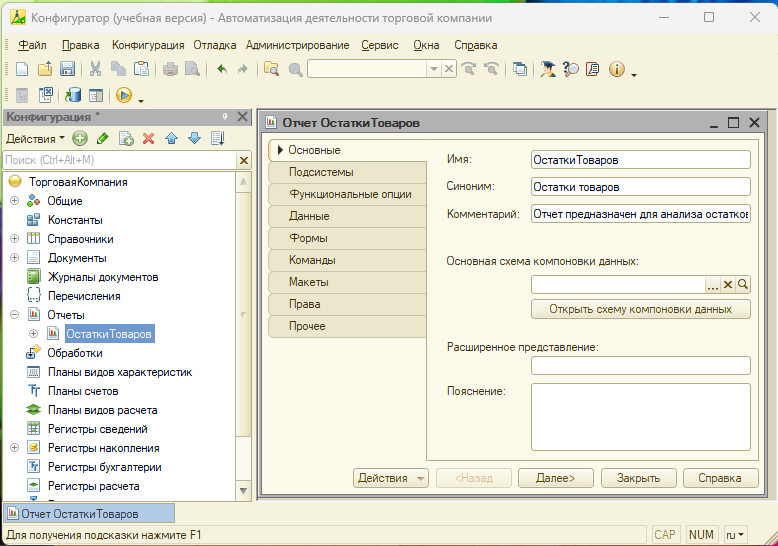
Шаг 1.
Откройте раздел «Подсистемы» созданного отчета.
Шаг 2.
Установите флажок напротив подсистемы «Складской учет»
При необходимости отчет можно дополнительно включить в подсистему «Продажи», однако для данной лабораторной работы основной является подсистема «Складской учет».
После включения в подсистему отчет станет доступен пользователю в соответствующем разделе интерфейса.
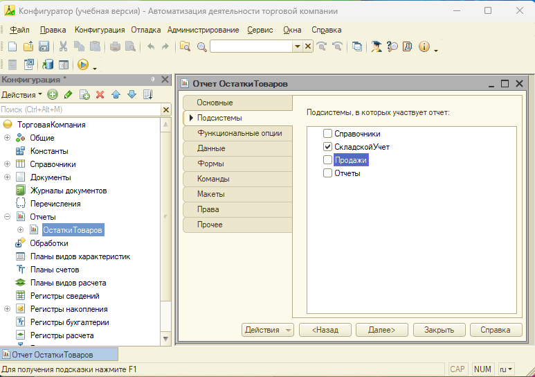
Контрольный результат.
После выполнения задания:
- отчет включен в подсистему «СкладскойУчет»;
- после обновления конфигурации команда «Остатки товаров» будет доступна пользователю в разделе «Складской учет».
Шаг 1.
Во вкладке «Оснвные» окна редактирования отчета найдите свойство «Основная схема компоновки данных». Нажмите кнопку открытия или команду «Создать» (Если нет данной кнопки, нажмите на кнопку «Открыть схему компоновки данных»).
Шаг 2.
В открывшемся окне выберите «Схема компоновки данных». Нажмите «Готово» (Рисунок 8.3).
После этого автоматически откроется редактор схемы компоновки данных.
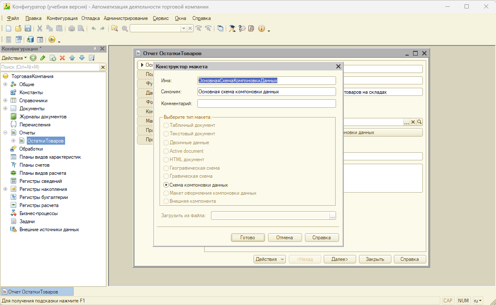
Схема компоновки данных определяет:
- источник информации;
- состав полей;
- параметры;
- группировки;
- отборы;
- порядок представления результата.
Шаг 1.
В редакторе схемы компоновки данных откройте вкладку «Наборы данных».
Шаг 2.
Нажмите кнопку «Добавить набор данных» и выберите «Добавить набор данных – Запрос», так как дальше мы будем строить отчет на основе запроса к регистру накопления «ОстаткиТоваров.Остатки».
Шаг 3.
Поменяйте имя набора данных «ОстаткиТоваров» (двойным щелчком). Затем нажмите кнопку «Конструктор запроса» (Рисунок 8.4).
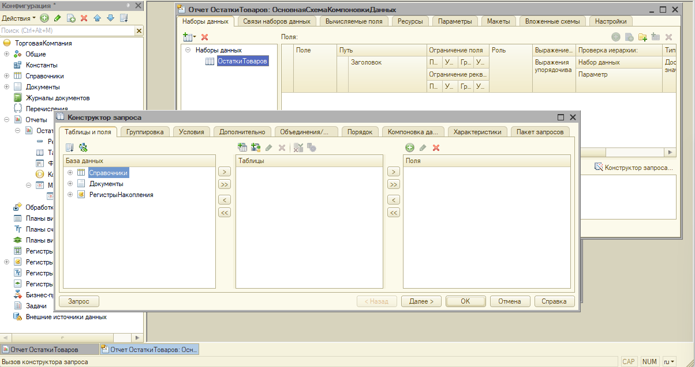
Шаг 1.
В левой части конструктора запроса раскройте ветвь «Регистры накопления».
Шаг 2.
В дереве объектов конструктора запроса найдите виртуальную таблицу «ОстаткиТоваров».
Шаг 3.
В появившемся списке выбираем «ОстаткиТоваров.Остатки» и перенесем в центральную часть, нажав на кнопку «>» (Рисунок 8.5).
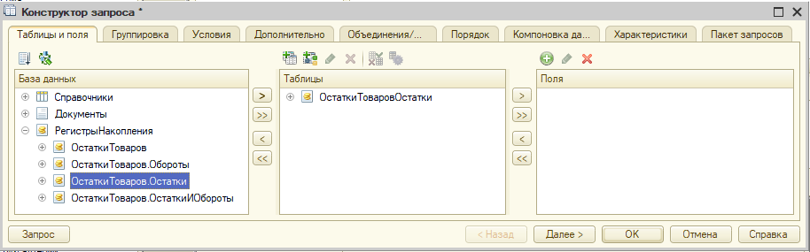
Шаг 1.
Раскрыть таблицу «ОстаткиТоваров.Остатки» нажав на значок «+».
Шаг 2.
В виртуальной таблице выберите поля:
- Товар;
- Склад;
- КоличествоОстаток.
Перенесите их в область выбранных полей.
Итоговый состав должен иметь вид:
| Поле источника | Назначение |
|---|---|
| Товар | Измерение регистра |
| Склад | Измерение регистра |
| КоличествоОстаток | Остаток ресурса «Количество» |
Нажмите кнопку «ОК» для завершения работы конструктора запроса (Рисунок 8.6).
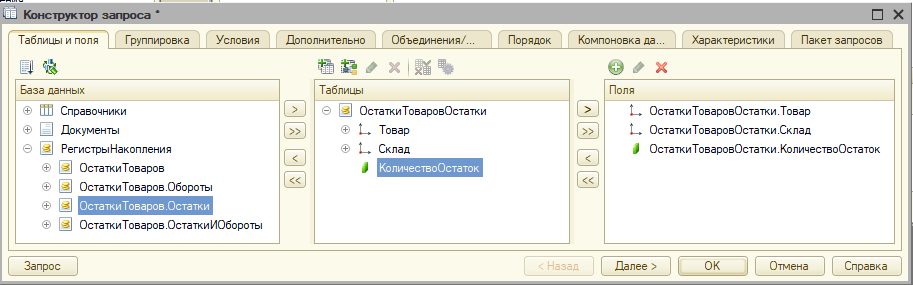
После выполнения задания:
- создан набор данных типа «Запрос»;
- источником данных выбрана таблица «ОстаткиТоваров.Остатки»;
- в запрос включены поля: «Товар», «Склад», КоличествоОстаток».
После закрытия конструктора запроса необходимо убедиться, что:
- набор данных называется «ОстаткиТоваров»;
- отображаются поля Склад, Товар и КоличествоОстаток;
- для полей Склад и Товар автоматически установлена роль «Измерение»;
- в нижней части окна отображается автоматически сформированный текст запроса (Рисунок 8.7).
Наименования псевдонимов могут отличаться в зависимости от версии платформы. Самостоятельно редактировать сформированный текст запроса на данном этапе не требуется.
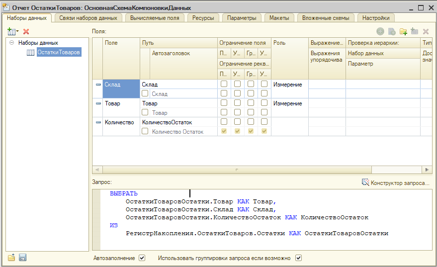
Шаг 1.
Перейдите на вкладку «Ресурсы».
Шаг 2.
Выделите поле «КоличествоОстаток», нажмите > (одинарная стрелка вправо между списками).
Справа появится (Рисунок 8.8):
| Поле | Выражение |
|---|---|
| КоличествоОстаток | Сумма(КоличествоОстаток) |
В некоторых версиях платформа сама подставляет агрегатную функцию, в некоторых — нет.
Ресурс необходим для вычисления итогового количества по группам товаров и складов.
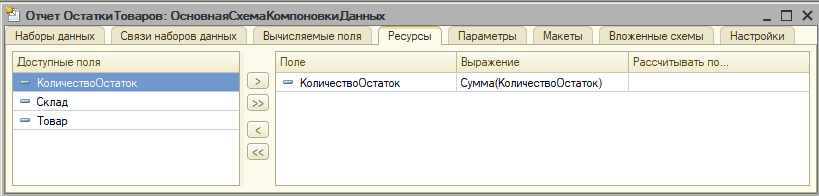
Шаг 3.
Переходите на вкладку «Параметры». Убедитесь, что автоматически создан параметр «Период» типа «Дата (Рисунок 8.9). Если параметр создан автоматически, никаких изменений выполнять не требуется.
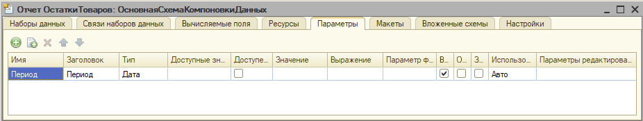
- Перейдите на вкладку «Настройки».
- В разделе структуры отчета (в правой части) выделите элемент «Отчет».
- Добавьте группировку используя кнопку «Добавить» и выбрав пункт «Новая группировка...».
- В открывшемся окне в качестве поля группировки выберите «Склад». Тип группировки оставьте «Без иерархии». Нажмите ОК (Рисунок 8.9).
После создания группировки структура отчета должна иметь вид:
Отчет
└─ Склад
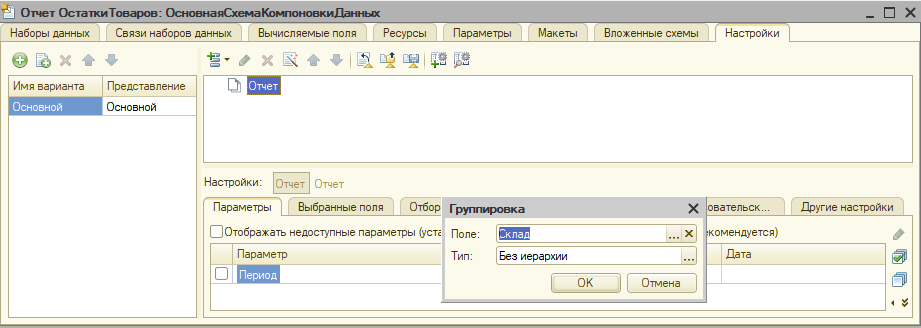
5. Добавьте вложенную группировку «Товар»
6. После создания группировок, в нижней части окна откройте вкладку «Выбранные поля». Из списка доступных полей добавьте «КоличествоОстаток». (Рисунок 8.10).
После настройки выбранных полей структура отчета должна обеспечивать вывод товаров и их остатков внутри каждой группы склада.
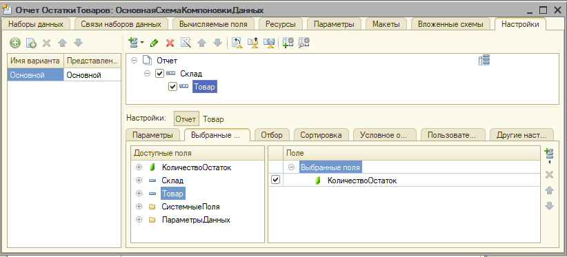
- Сохранить конфигурацию.
- Обновить конфигурацию базы данных (F7 или Конфигурация → Обновить конфигурацию базы данных).
- Запустить 1С:Предприятие.
- Открыть Складской учет → Отчеты → Остатки товаров. Нажать «Сформировать» (Рисунок 8.11).
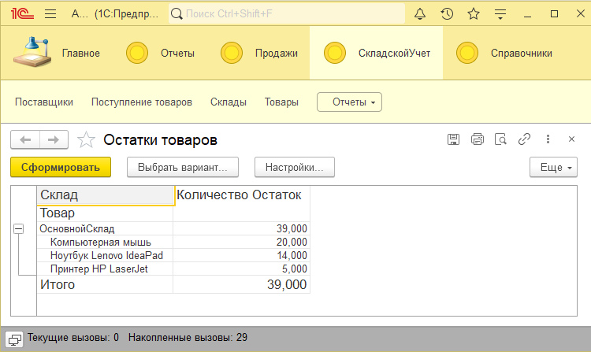
- Откройте отчет «Остатки товаров» в режиме Конфигуратор.
- Откройте «Основную схему компоновки данных».
- Перейдите на вкладку «Настройки». Выделив элемент «Отчет» в структуре настроек, в нижней части окна откройте вкладку «Отбор».
- Нажмите кнопку «Добавить» (зеленый плюс) и выберите команду «Новый элемент».
- Должно появиться окно выбора поля. Выберите «Склад», и нажмите ОК. Поле «Правое значение» остается пустым. Это позволит пользователю выбирать склад непосредственно при формировании отчета (Рисцнок 8.12).
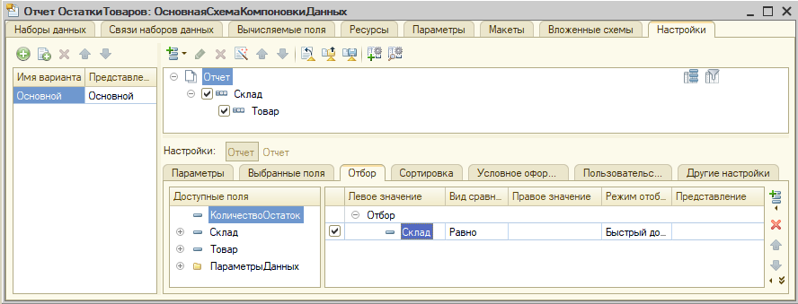
- Оставьте открытой вкладку «Настройки» схемы компоновки данных. Выделенным должен быть элемент «Отчет»
Именно для отчета мы добавляем доступные пользователю отборы. - Откройте вкладку «Отбор». В списке уже присутствует отбор «Склад»
- Нажмите кнопку «Добавить» (зеленый плюс справа). В появившемся меню выберите «Новый элемент».
- В открывшемся окне выберите поле «Товар». Нажмите ОК.
- Убедитесь, что новый отбор имеет параметры:
| Левое значение | Вид сравнения | Правое значение | Режим отбора |
|---|---|---|---|
| Товар | Равно | (не заполнено) | Быстрый доступ |
Поле «Правое значение» оставьте пустым.
Это позволит пользователю самостоятельно выбирать товар при формировании отчета.
6. После добавления элементов отбора снимите флажки слева от условий «Склад» и «Товар». Это позволит сделать отборы доступными пользователю, не применяя их автоматически при формировании отчета (Рисунок 8.13).
Контрольный результат.
После выполнения задания:
- в настройках отчета доступны два отбора:
○ Склад;
○ Товар; - для обоих отборов не задано фиксированное значение;
- пользователь сможет формировать отчет:
○ по всем складам и товарам;
○ по выбранному складу;
○ по выбранному товару;
○ по выбранному товару на выбранном складе.
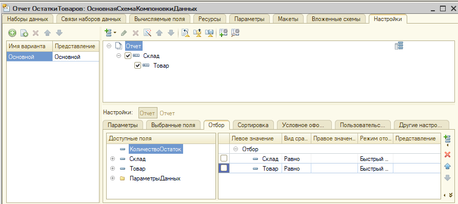
- Сохранение схемы компоновки данных.
Закройте редактор схемы компоновки данных.
Если система предложит сохранить изменения, нажмите «Да». - Проверка отчета.
Откройте объект Отчет «Остатки товаров».
Убедитесь, что свойство «Основная схема компоновки данных» содержит созданную схему.
Например: «ОсновнаяСхемаКомпоновкиДанных». - Сохранение конфигурации.
Выполните команду Конфигурация → Сохранить конфигурацию или нажмите Ctrl + S. - Обновление конфигурации базы данных.
Выполните команду Конфигурация → Обновить конфигурацию базы данных или нажмите клавишу F7. - Подтверждение обновления.
Если появится окно «Реорганизация информации», нажмите «Принять».
Дождитесь окончания обновления конфигурации.
Контрольный результат
После выполнения задания:
- схема компоновки данных сохранена;
- конфигурация успешно сохранена;
- база данных обновлена;
- ошибки обновления отсутствуют.
- Запуск режима «Предприятие».
Выполните команду Отладка → Начать отладку или нажмите клавишу F5. - Открытие отчета.
Перейдите в раздел «Складской учет».
Откройте команду «Отчеты → Остатки товаров». - Формирование отчета (Рисунок 8.14).
Нажмите кнопку «Сформировать».
Если в отчете используется параметр «Период», при необходимости укажите дату, на которую требуется получить остатки.
Контрольный результат.
После формирования отчета должны отображаться:
- склады;
- товары, сгруппированные по складам;
- остатки каждого товара;
- итоговое количество по каждому складу и общий итог.
Пример структуры отчета:
ОсновнойСклад
Компьютерная мышь
Ноутбук Lenovo IdeaPad
Принтер HP LaserJet
Итого
Примечание. Количественные значения могут отличаться от приведенных в примере, если при выполнении предыдущих лабораторных работ были созданы дополнительные документы поступления или реализации товаров.
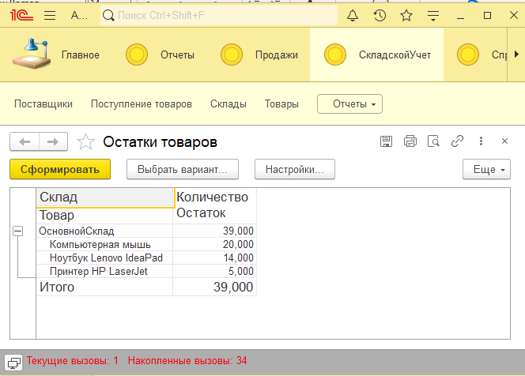
Индивидуальное задание 1. Проверка отчета при добавлении нового документа
Цель: убедиться, что отчет автоматически использует актуальные данные регистра накопления.
Порядок выполнения:
- Создайте новый документ «Поступление товаров».
- Добавьте одну строку, например:
| Поле | Значение |
|---|---|
| Склад | ОсновнойСклад |
| Товар | Компьютерная мышь |
| Количество | 5 |
- Проведите документ.
- Сформируйте отчет «Остатки товаров».
Контрольный результат:
Количество компьютерных мышей должно увеличиться на 5 единиц.
Индивидуальное задание 2. Работа с несколькими складами
Цель: проверить работу группировки отчета при наличии нескольких складов.
Порядок выполнения:
- Создайте новый склад «РезервныйСклад».
- Создайте документ «Поступление товаров».
- Укажите новый склад и один из товаров.
- Проведите документ.
- Сформируйте отчет повторно.
Контрольный результат.
В отчете должны появиться группы:
- «ОсновнойСклад»,
- «РезервныйСклад».
Индивидуальное задание 3. Изменение структуры отчета
Цель: изменить порядок группировки данных.
Порядок выполнения:
В конфигураторе измените структуру схемы компоновки данных так, чтобы сначала отображались товары, а внутри каждого товара — склады.
Контрольный результат.
Отчет должен иметь вид:
Ноутбук Lenovo IdeaPad
ОсновнойСклад
РезервныйСклад
Компьютерная мышь
ОсновнойСклад
Индивидуальное задание 4. Добавление нового ресурса
Цель: познакомиться с настройкой ресурсов схемы компоновки данных.
Порядок выполнения:
Попробуйте самостоятельно добавить новый ресурс или изменить способ вычисления существующего ресурса.
Контрольный результат.
Изменения должны корректно отражаться при формировании отчета.
Примечание. Если структура регистра не содержит других числовых полей, выполнение задания ограничивается исследованием возможностей настройки ресурсов.
Индивидуальное задание 5. Исследование пользовательских настроек отчета
Цель: изучить возможности настройки варианта отчета в режиме «Предприятие».
Порядок выполнения:
Исследуйте команды:
- Еще → Изменить вариант;
- Еще → Выбрать настройки;
- Еще → Сохранить настройки.
Определите, какие возможности доступны пользователю в учебной версии платформы.
Контрольные вопросы
- Для чего предназначена схема компоновки данных в системе «1С:Предприятие»?
- Как создать новый отчет в конфигураторе?
- Что представляет собой набор данных схемы компоновки данных?
- Чем отличается запрос к регистру накопления Остатки от запроса к регистру Обороты?
- Что такое ресурс схемы компоновки данных?
- Для чего используются параметры отчета?
- Чем отличается параметр отчета от отбора?
- Для чего применяется группировка данных в отчете?
- Как связаны регистр накопления и отчет «Остатки товаров»?
- Почему после проведения документа данные отчета изменяются автоматически?
- Какие действия необходимо выполнить после изменения конфигурации перед запуском режима «Предприятие»?
- Какие преимущества предоставляет использование схемы компоновки данных по сравнению с программным формированием отчета?
Содержание отчета
В результате выполнения лабораторной работы должен быть сформирован отчет «Остатки товаров», содержащий сведения об остатках товаров на складах организации.
Отчет должен включать:
- наименование склада;
- перечень товаров, сгруппированных по каждому складу;
- количество товара в остатке;
- итоговое количество товаров по каждому складу;
- общий итог по отчету.
Проверьте себя
Ответьте на вопросы по выполненной лабораторной работе. В каждом вопросе выберите один правильный вариант ответа.